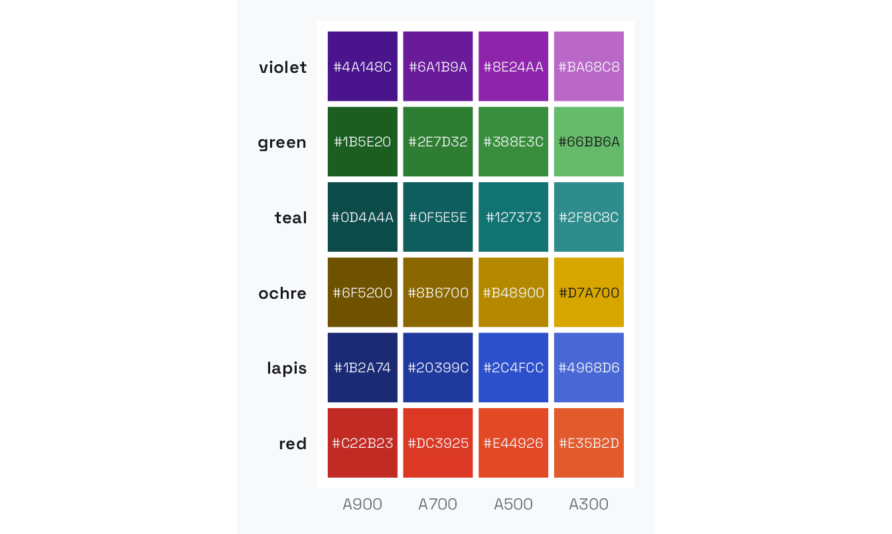
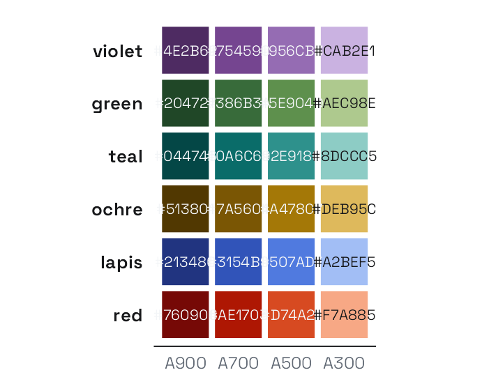
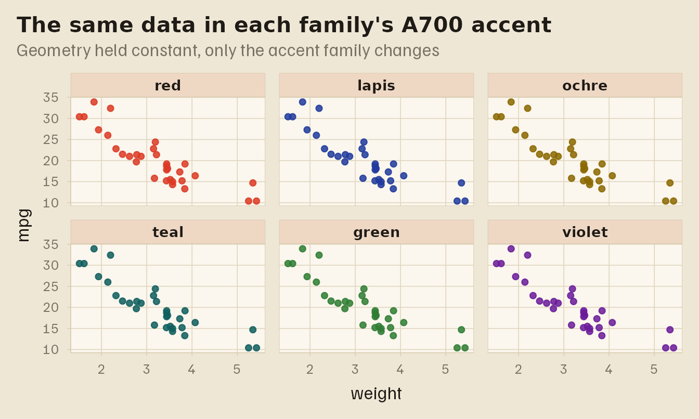
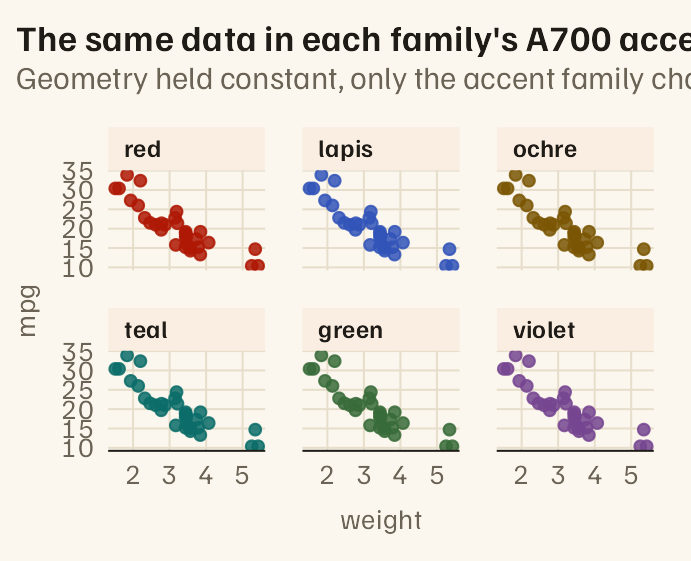
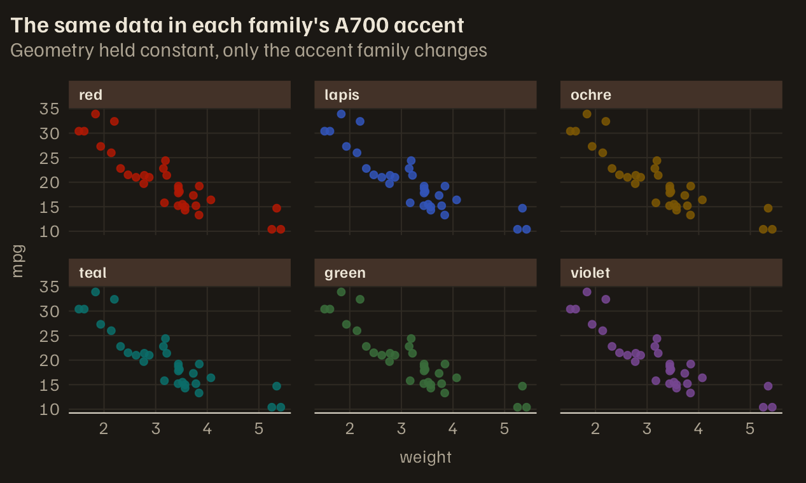
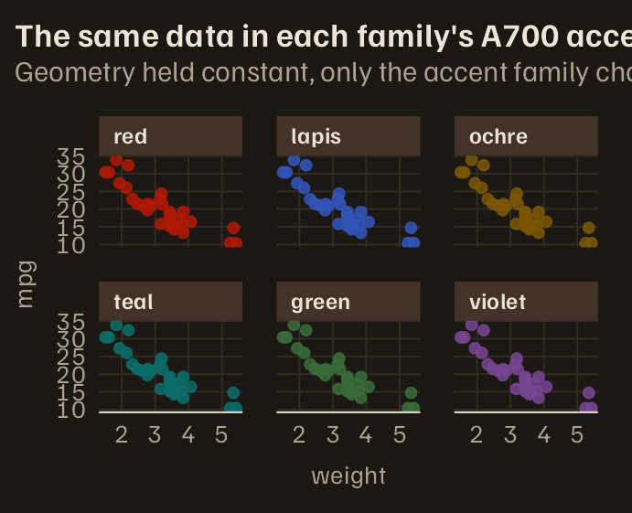
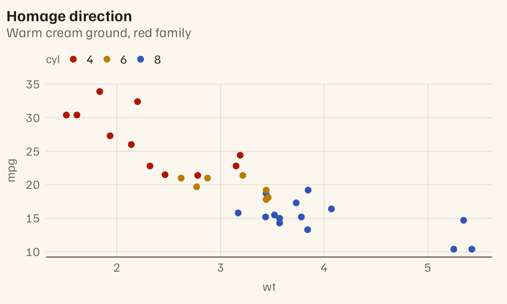
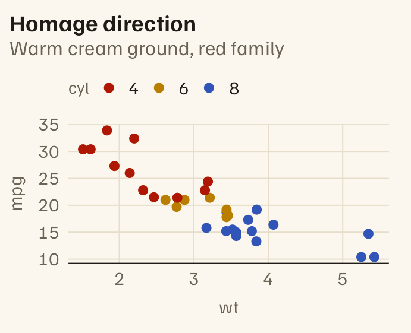
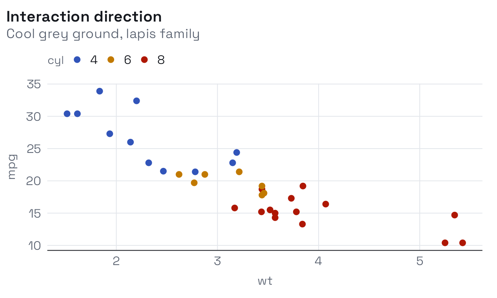
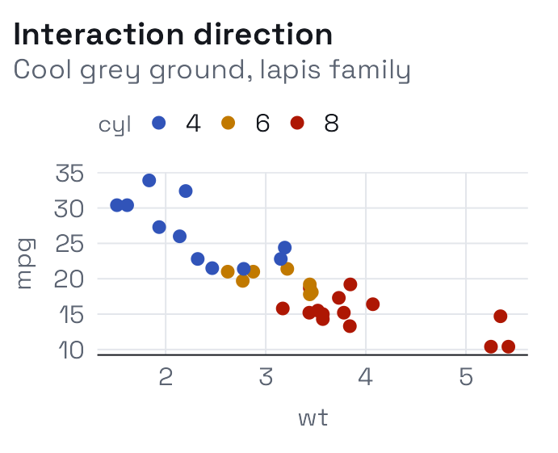

Theme Showcase: Directions and Families
Source:vignettes/articles/theme-showcase.Rmd
theme-showcase.RmdThe albersdown system
albersdown has two orthogonal axes:
- A direction sets the page mood: homage (warm cream ground, Newsreader serif body, light code blocks) or interaction (cool grey ground, all-grotesk type, dark code blocks).
- A family sets the accent hue used for links, the
nested-square marker, and plot palettes:
red,lapis,ochre,teal,green, orviolet.
Any family pairs with either direction. This page is rendered in
homage + red; vignette("getting-started")
shows homage and vignette("interaction") shows the cool
direction in full.
The six families
Each family is a four-tone ramp (A900 → A300). The marker, links, and plot scales all draw from the active family.
albersdown::albers_swatch(c("red", "lapis", "ochre", "teal", "green", "violet"))

families <- c("red", "lapis", "ochre", "teal", "green", "violet")
accent_a700 <- vapply(families, function(f) albersdown::albers_palette(f)[["A700"]], character(1))
plot_df <- do.call(rbind, lapply(seq_along(families), function(i) {
d <- mtcars
d$family <- families[[i]]
d
}))
plot_df$family <- factor(plot_df$family, levels = families)
ggplot(plot_df, aes(wt, mpg, colour = family)) +
geom_point(alpha = 0.85, size = 1.7) +
facet_wrap(~family, ncol = 3) +
scale_color_manual(values = accent_a700) +
labs(
title = "The same data in each family's A700 accent",
subtitle = "Geometry held constant, only the accent family changes",
x = "weight", y = "mpg"
) +
theme(legend.position = "none")



The two directions, in plots
theme_albers() grounds a plot in the direction you pass,
so a figure always sits on the same surface as its page — warm cream for
homage, cool grey for interaction.
ggplot(mtcars, aes(wt, mpg, colour = factor(cyl))) +
geom_point(size = 2.2) +
albersdown::scale_color_albers(family = "red") +
labs(title = "Homage direction", subtitle = "Warm cream ground, red family", colour = "cyl") +
albersdown::theme_albers(family = "red", preset = "homage")

ggplot(mtcars, aes(wt, mpg, colour = factor(cyl))) +
geom_point(size = 2.2) +
albersdown::scale_color_albers(family = "lapis") +
labs(title = "Interaction direction", subtitle = "Cool grey ground, lapis family", colour = "cyl") +
albersdown::theme_albers(family = "lapis", preset = "interaction")

Picking a combination
recipes <- data.frame(
profile = c("homage-red", "homage-teal", "interaction-lapis", "interaction-ochre"),
family = c("red", "teal", "lapis", "ochre"),
direction = c("homage", "homage", "interaction", "interaction"),
mood = c("warm, classic", "warm, calm", "cool, technical", "cool, earthy"),
stringsAsFactors = FALSE
)
knitr::kable(recipes, format = "html", caption = "A few coherent direction + family pairings.")| profile | family | direction | mood |
|---|---|---|---|
| homage-red | red | homage | warm, classic |
| homage-teal | teal | homage | warm, calm |
| interaction-lapis | lapis | interaction | cool, technical |
| interaction-ochre | ochre | interaction | cool, earthy |
Next step
- Use the Theme Lab to tune family, direction, style, and width interactively.
- See
vignette("getting-started")(homage) andvignette("interaction")(interaction) for full-page examples of each direction.